One windy autumn morning, a cheeky little wind blew every letter and number out of the village. Your child sets off as Marko or Ana, with Riso the lynx cub, to bring them home – across the real North Macedonia. Along the way they learn to read, write and count, and arrive ready for first grade. And after the story, the village stays – for years.
No adsNot one, ever – and no purchase prompts in front of children.
No trackingNo analytics, no advertising IDs, no third-party tools that collect data.
No accountsNo sign-up, no log-in, no chat with strangers.
Works fully offlineEverything is on the device: in the car, on the plane, at grandma’s in the village.
We collect no dataProfiles and progress stay on your device.
A grown-ups’ areaSubscription, settings and links sit behind a short check for adults.
What it is
A real game, with a good teacher inside
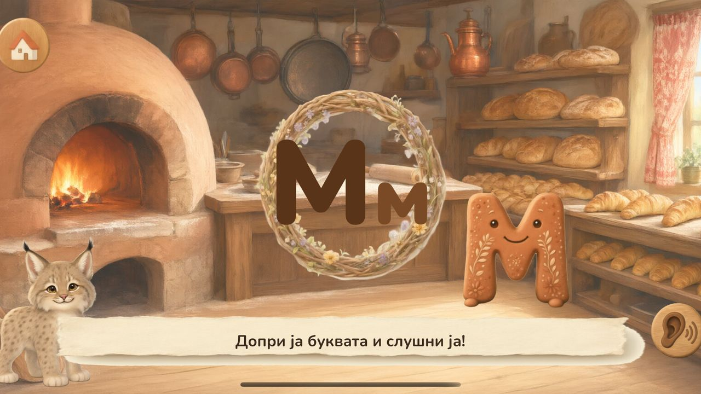
A story that carries children along
Every letter your child finds comes alive as a little friend made from the land where it fell: carved wood in the forest, clay in the fields, pebbles by the lake. It sings its sound, learns your child’s name and moves back to the village. The bakery opens again, the clock tower ticks again, and the school gets ready for September.
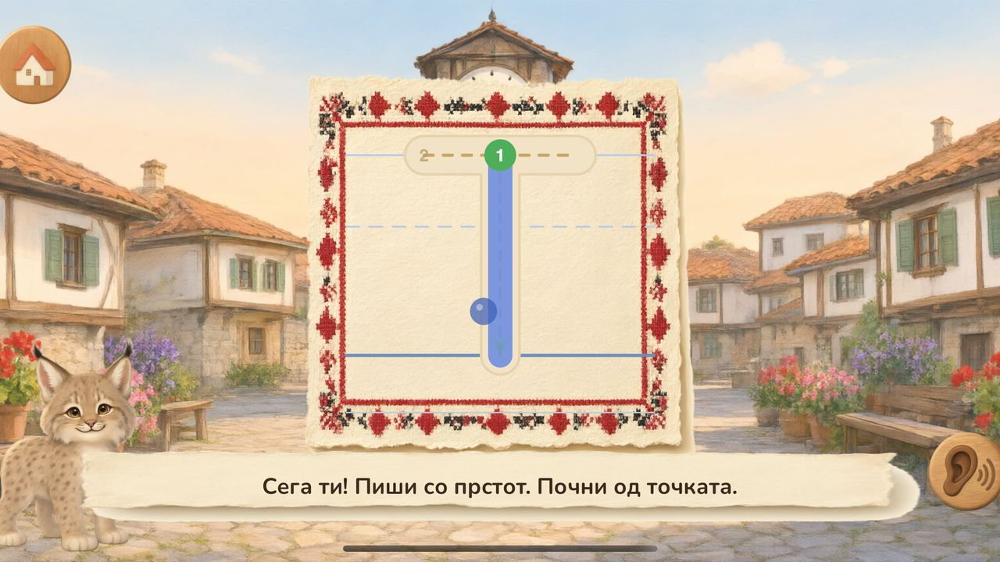
A teacher who knows each child
The game finds where each child is, teaches one new thing at a time, checks it again the next day and brings it back before it is forgotten. When something is hard, Riso shows the way – no child is left to get it wrong twice in a row without help. Every instruction is spoken, so a three-year-old who can’t read yet can play alone.
What children learn
Everything a child needs before first grade
Letters and sounds
Every letter of the Macedonian alphabet, capital and small, with its sound. Children start with the same 15 letters the Grade 1 textbook starts with.
Reading
From sounds to syllables, words, sentences and little picture books. Every text uses only letters your child already knows – the first word, мама, comes after just two letters.
Writing
Finger tracing with the letter shapes and stroke order taught at school: where each line starts and which way it goes. A left-handed mode mirrors the models.
Speaking and listening
Everyday phrases with the villagers, echo games and slower speech – especially helpful for children growing up abroad – and practice for the sounds a child finds hard.
Numbers
Counting, numbers to 20, adding and taking away within 10, shapes, patterns, days and months – and, for the oldest, denars at the market and numbers to 100.
The world around us
Colours, family, animals, weather, healthy habits, feelings, road safety, music and the oro – and the Latin “cousins” of the letters, for reading bilingual signs.
The journey
Eight lands, one real country
The route loops around North Macedonia, so children pick up real geography as they go. Each land brings home a group of letters, new numbers and a mini-adventure.
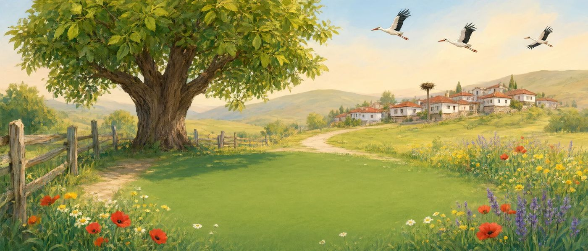
Land 1 Free
Bukvograd and the Meadow
А М Т О Е
Numbers 1 to 5, colours, shapes, family and greetings – and the first word: мама.
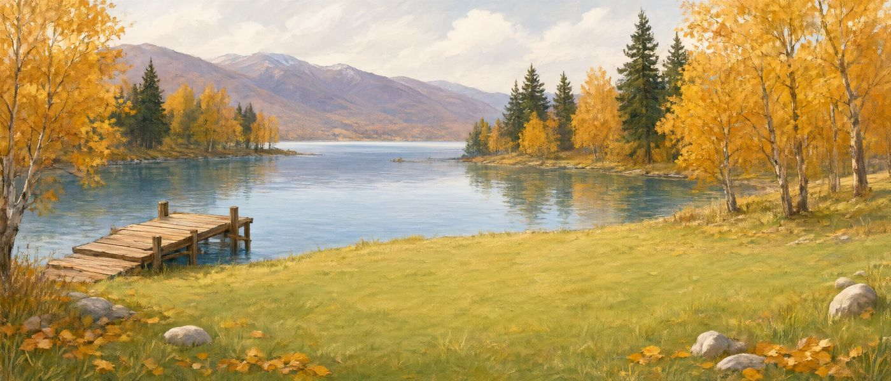
Land 2
The Mavrovo forest
Н С Л И Р
Numbers to 10, patterns and sorting, forest animals and autumn. This is where Riso comes from.
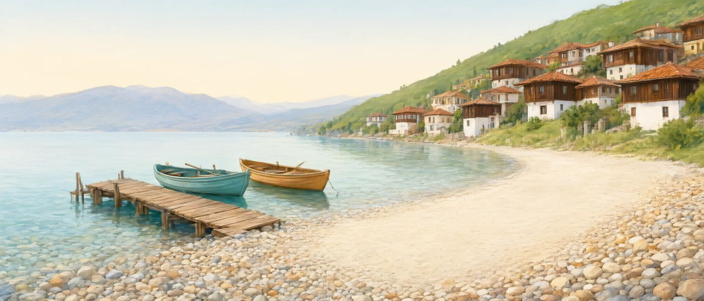
Land 3
Lake Ohrid
У К В П Д
Zero and the number line, long and short, sink or float, water animals and the weather.
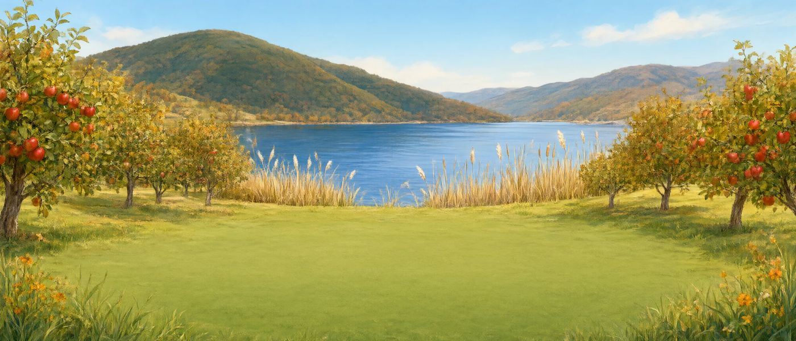
Land 4
Pelister and Prespa
Ј Б Ч Ш Г
Adding within 5, the days of the week, left and right; pine forests, Prespa apples and pelicans.
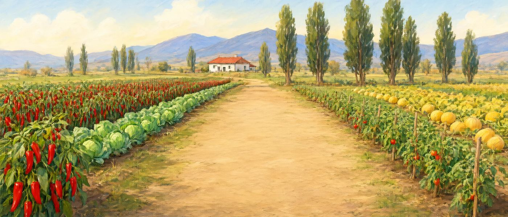
Land 5
The fields of Strumica and Dojran
З Ќ Ц Ж Њ
Taking away, adding within 10 and counting at the market; vegetables, fruit and a healthy plate.
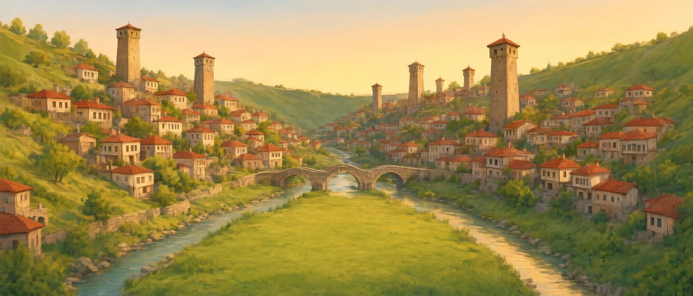
Land 6
Kratovo and Kokino
Ф Ѓ Х Љ Ѕ Џ
Numbers to 20, months and shapes in buildings; stars above the ancient observatory – Ѕ as in ѕвезда, star.
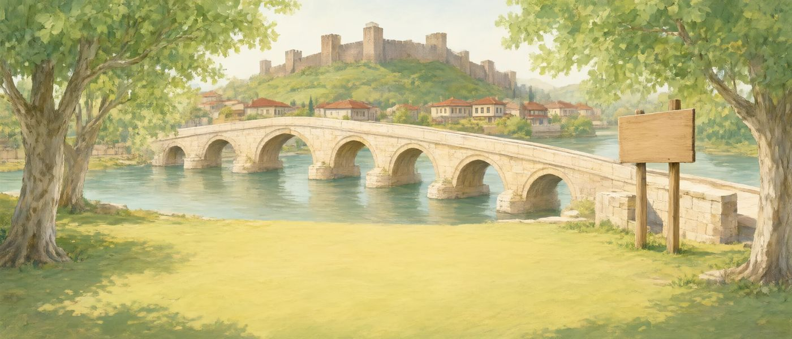
Land 7
Skopje
All letters + Latin cousins
Reading signs and stories, the Stone Bridge and the Old Bazaar, money, road safety and the map of the country.
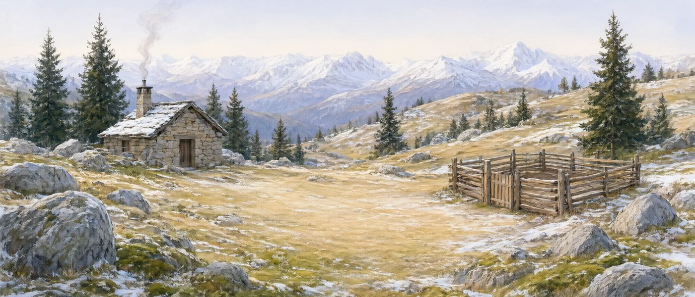
Land 8
Šar Mountain
Sentences and stories
Writing their own name, music and the oro in 7/8, winter, feelings – and how to say sorry.
And then: the school gate. Back in the rebuilt village, everyone dances the oro – ready for first grade.
After the story
The village stays for years
The story ends at the school gate, but Буквоград keeps going – from age 3 until the first school bell and beyond. There is always something new to do, and it always fits where your child is.
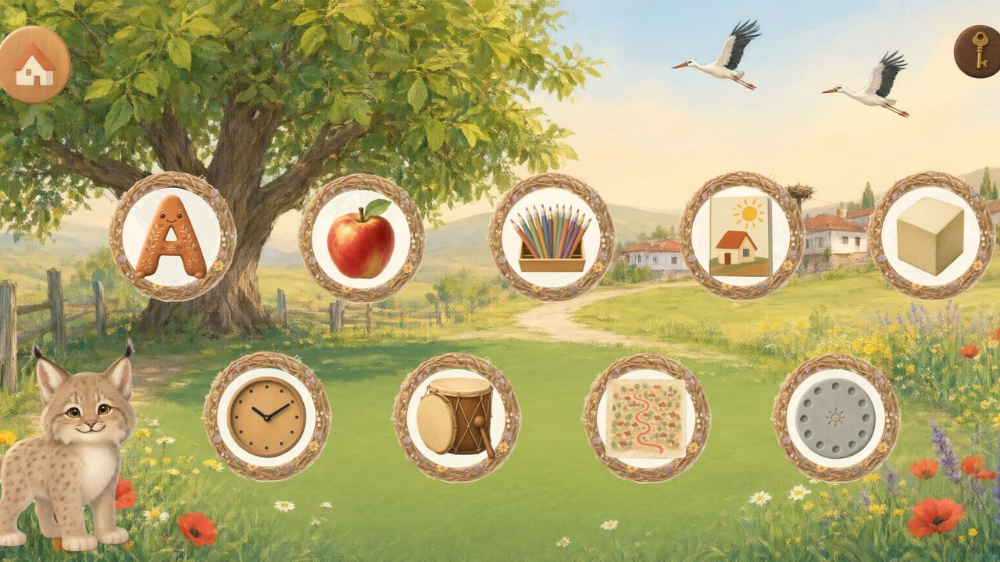
A new walk every day, and the playground
Each day Riso plans a short walk: a little of what is fading, one new thing and a step towards school. In between, the toys in the playground – letters, numbers, colours and shapes, music, time and thinking games – never run out, and each one grows with your child.
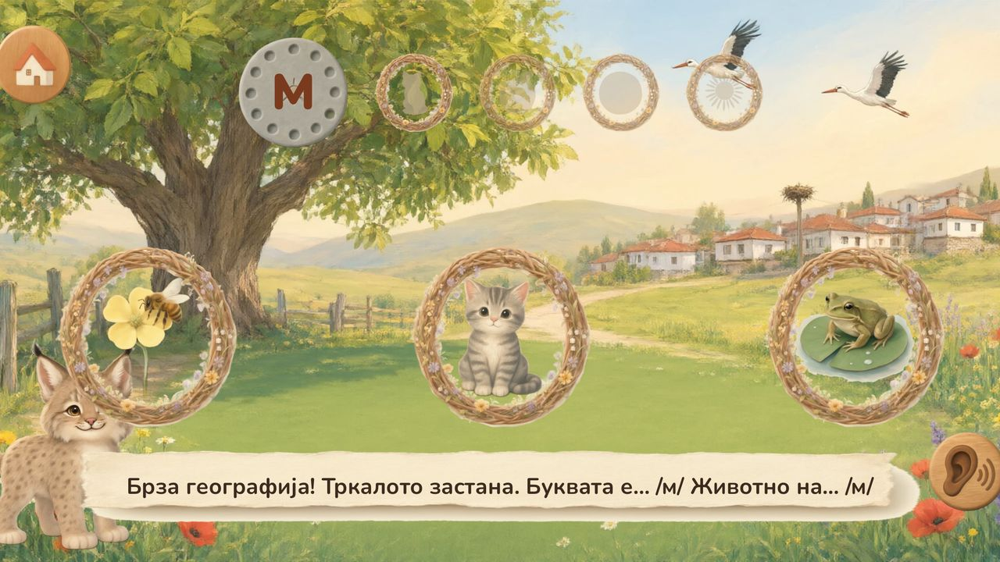
Quick Geography (Брза географија)
The classic word game, made for little ones: the wheel stops on a letter, and your child finds an animal, a food and a place that start with it. Pictures for the youngest; reading and building the words for the oldest, with real places from the map.
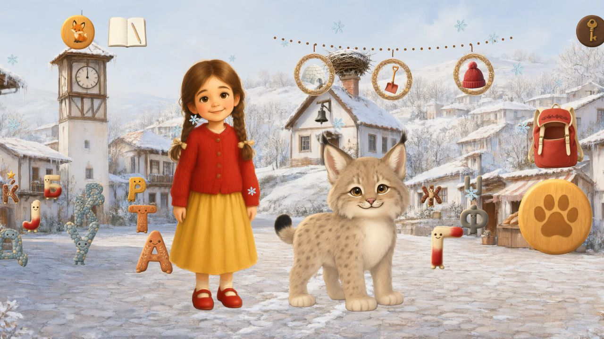
Fresh all year
The village follows the real seasons – snow in winter, blossom in spring, summer sun – and celebrates the holidays you choose. New mini-stories arrive with updates every few weeks.
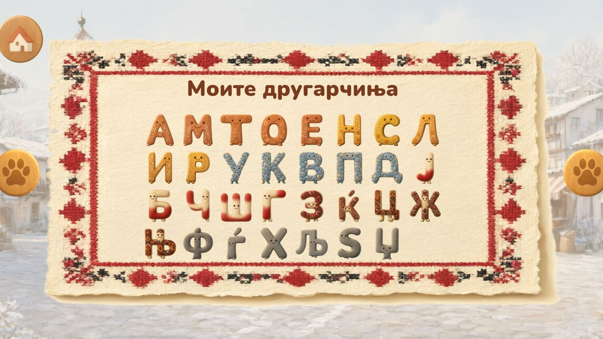
My Primer (Мојот буквар)
An album that grows with your child: every letter friend, the word stickers by topic, the books read and the places visited – and, at the end, a diploma: ready for first grade.
It grows with your child. On each birthday the games move up a step – longer words, the number line, quick counting – and the oldest keep practising until school starts.
Speech practice
For the sounds that are hard
Many preschoolers can’t say every sound yet. Choose the ones your child finds hard – Р, Л, Ш, С and others – and Riso practises them together every day, a little at a time.
Step by step, the way speech therapists do
First the sound on its own, with a picture that “says” it (the tiger goes rrr), then syllables, words with the sound at the start, in the middle and at the end, and finally whole sentences. Besides: tongue and lip exercises (“Веселото јазиче”), breathing games (“Дувај!”), games for hearing sounds apart and spotting the parrot’s slips (“Слушај добро”, “Точно или не?”), and first words for children who say few yet (“Први зборчиња”). With “hear yourself” switched on, your child hears their own voice straight away – on the device only, nothing is recorded.
New words and stories to hear
For the youngest: a talking picture dictionary – 268 pictures by topic, from animals to feelings, each saying its own word; “Hear and show” – a word is said, your child shows its picture; and 36 little books Riso reads aloud, with a question at the end.
With a guide for parents
In the parent area: which sounds you practise and which step you have reached, how to practise (little and often, praising every try) and when it is worth seeing a speech therapist. The practice is a game – it does not replace therapy.
First grade
Alongside school
From the first school day the game goes with the class: it follows the primer and the pace of the school year, and you see what the class learns and what your child practises.
The letters in the primer’s order
The walks practise the letters the class has just learnt, in the same order and at the same pace, a little ahead. If the class is somewhere else, tell the game and it follows.
Numbers, sentences and shapes
The street of numbers to 100, the pairs that make ten, doubles and counting on to 20; sentences built from word cards; the cube, cuboid, cylinder, cone and sphere, and mirror symmetry – first grade, as a game.
Month by month
On the progress page: each month, the letters the class meets, and beside them what your child practised in the game – letters, words, books, sentences and maths.
The characters
Friends for the road
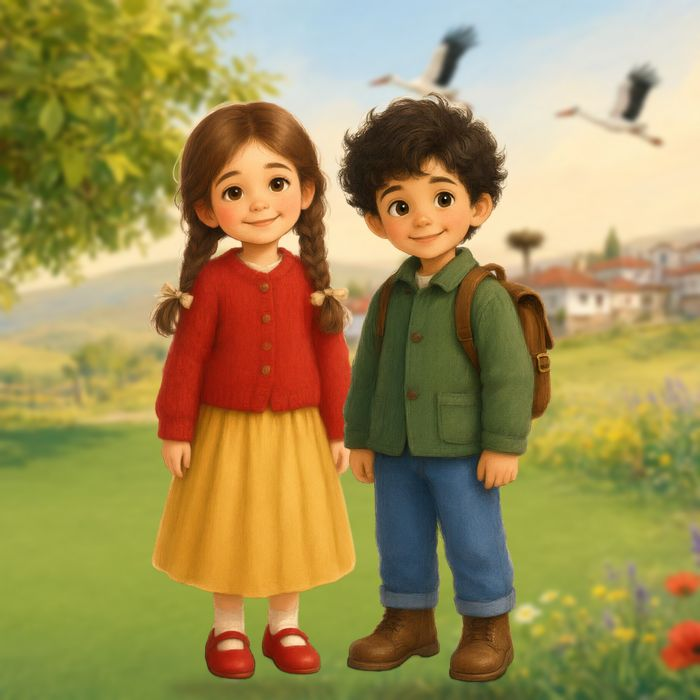
Marko or Ana
Your child picks a hero. Every line spoken to or about the hero exists in a boy’s and a girl’s version, in correct Macedonian: „Браво, многу си вреден!“ or „Браво, многу си вредна!“
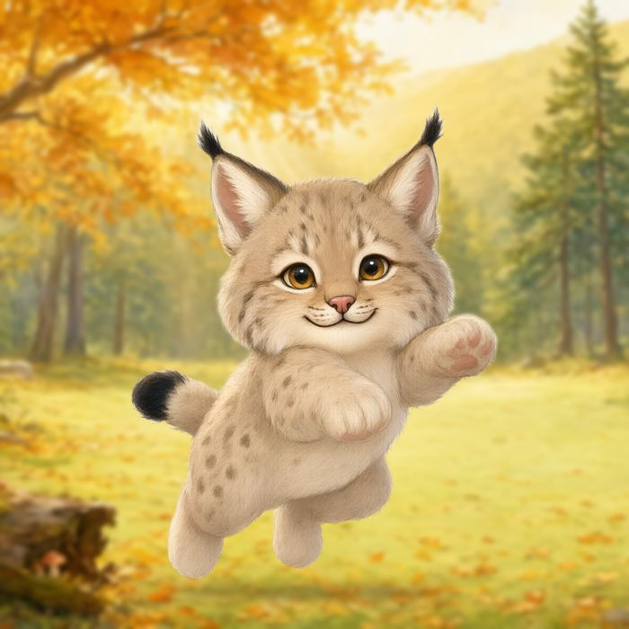
Riso
A Balkan lynx cub from the Mavrovo mountains: guide, friend and the first to laugh at his own mistakes. When it’s time to rest, he is the first to yawn.
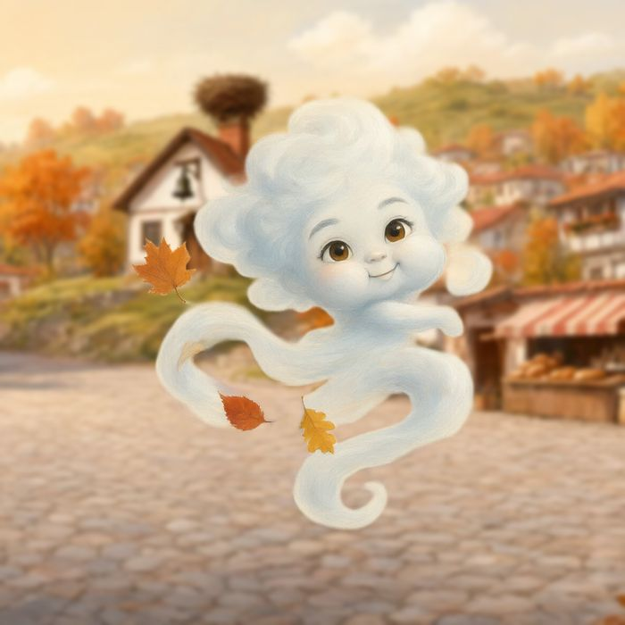
Vetrushko, the wind
A young wind who never learned that letters matter. He teases all the way – and on Šar Mountain, he says sorry.
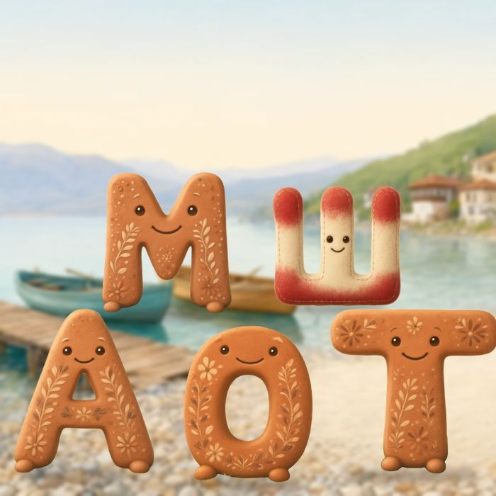
The letter friends
Each letter is made from the craft of its land – walnut wood, clay, embroidered linen, pebbles from the lake – always in the exact shape children learn at school.
For parents
You stay in charge
The parent area is behind a short task for grown-ups. Children never see prices, purchase buttons or links out of the game.
Up to six children on one device, each with their own profile and progress.
A progress page for every child: letters learned, reading and writing stage, numbers, and ideas to practise at home.
The years at a glance: a timeline from the first day – the first letter, all 31, the first word read, the first book, their own name – and a certificate when your child is ready for school.
Quiet time: when you need a few minutes, hand the device over for 10 to 30 minutes of learning games only – even without sound, for a waiting room – with a calm end that only you can open again. Or a bedtime story: Riso reads two little books aloud in the night forest, different ones each night, then falls asleep.
In Macedonian, English and German. Every Macedonian word shown to parents has a Latin transliteration, a translation and a listen button – so you can help even if you don’t read Cyrillic.
Calm by design. Sessions are short (5 to 15 minutes, depending on age) and end with a gentle rest. Daily limit and quiet hours. No streaks, no countdowns, no notifications.
Accessible: subtitles, slower speech, reduced motion, a colour-blind-safe palette, left-handed mode and separate volumes.
Close to school: the same first 15 letters as the Grade 1 textbook, the school’s letter shapes and stroke order, and a setting to follow the textbook’s exact letter order.
Free and paid
Start free. Subscribe if your child loves it.
Chapter 1 – free, forever
The village and the meadow: the letters А, М, Т, О and Е, numbers to 5, the first word and the first sentence, and three toys in the playground – plus the whole parent area. No time limit. This is not a trial.
The whole journey and the years after – monthly or yearly
All eight lands and the grand finale, Riso’s daily walks, the whole playground, Quick Geography and every new story, for every child on the device. Around €2.99 a month, or €24.99 a year – about 30% less. The App Store or Google Play shows the exact price in your currency before you confirm.
The subscription renews automatically at the end of each month or year until you cancel. You can cancel at any time in your App Store or Google Play settings. If you stop, Chapter 1 stays open and all progress is kept.
A first look
From the painted world of Буквоград
Real screenshots from the game. Every spoken line also appears as a subtitle.
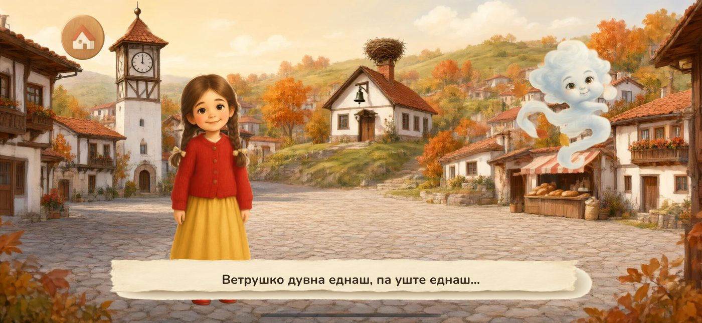
Help Riso bring the letters homeThe story begins
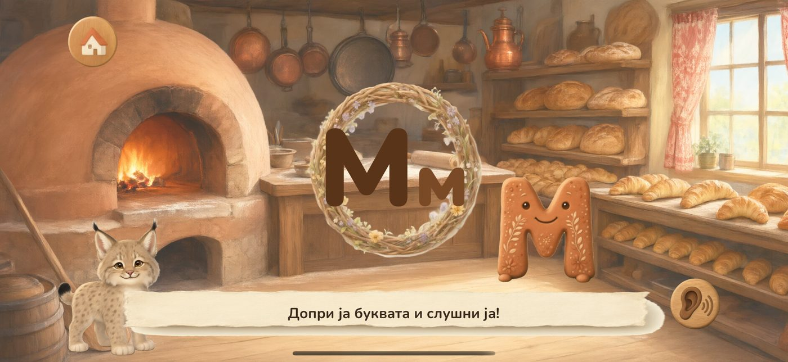
Every letter comes alive and sings its soundMeet the letter
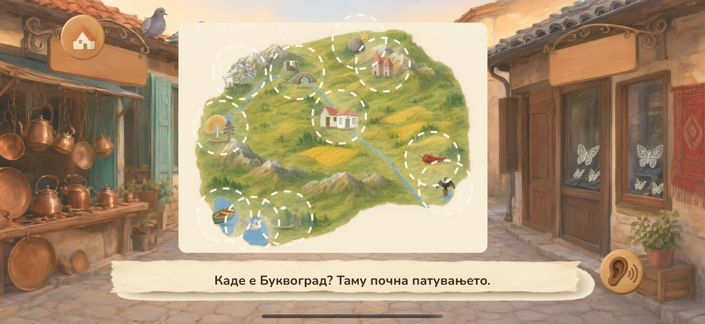
A journey around the real North MacedoniaThe map
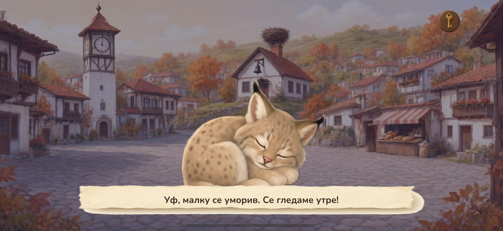
Short sessions with a calm goodbyeTime to rest
Questions?
How the subscription works, how to cancel, what happens offline, how to delete your child’s data – it’s all in the answers for parents.